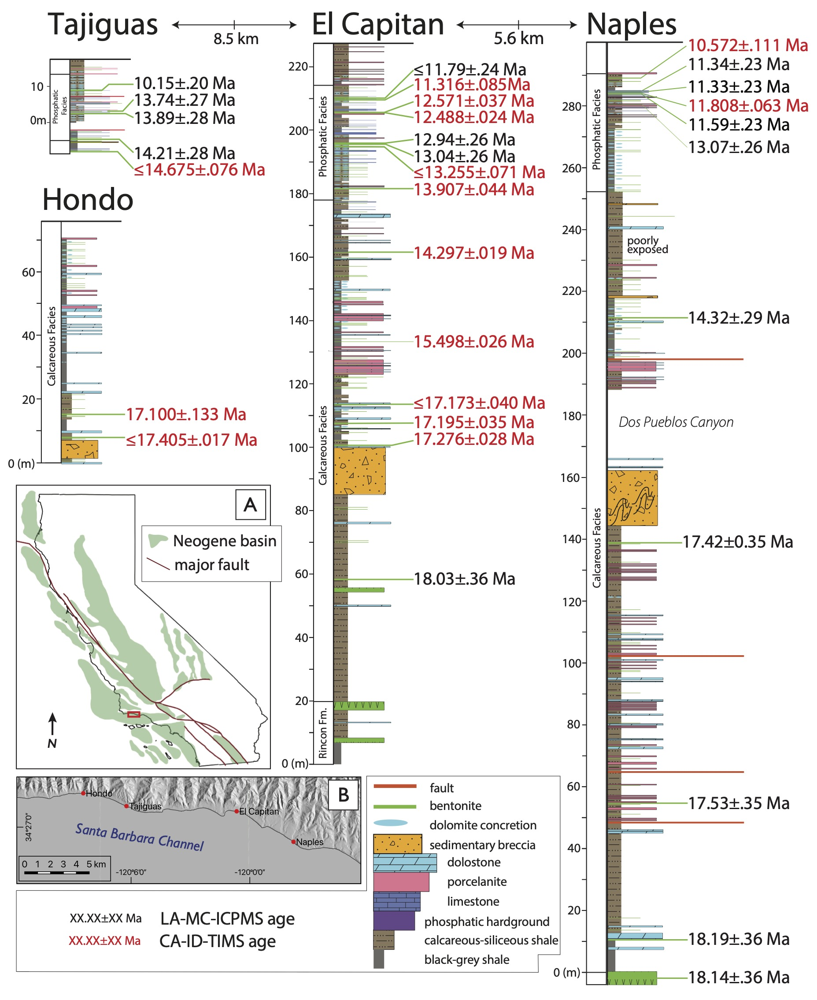
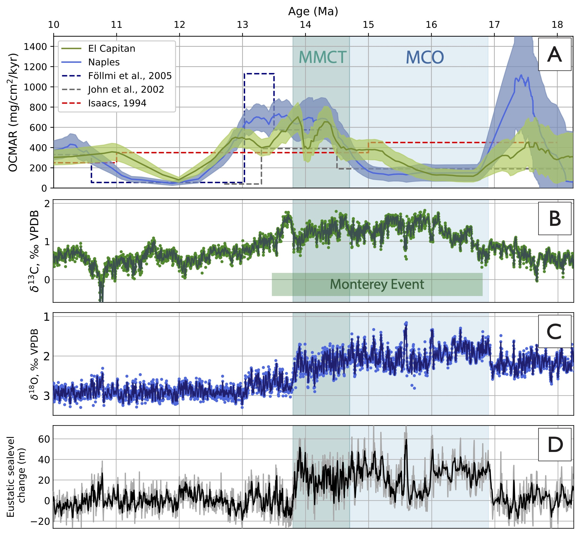
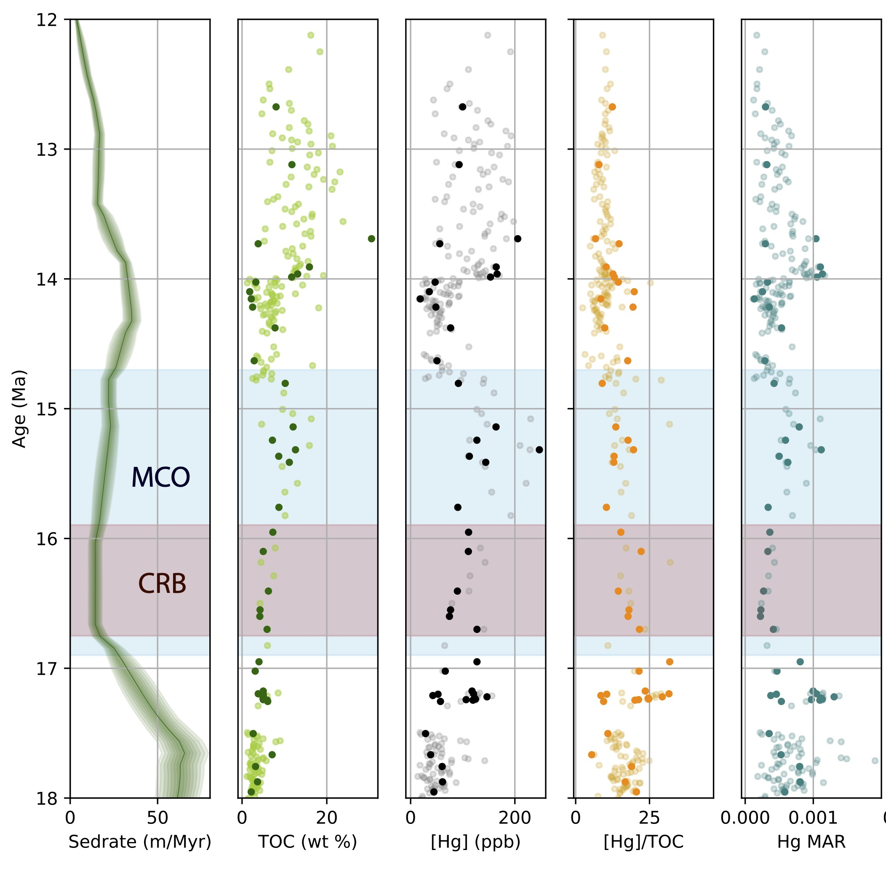

Understanding the transfer of carbon between Earth’s surface reservoirs is necessary for interpreting climate transitions in Earth history and predicting future climate change. Warming associated with the 16.9–14.7 Ma Miocene Climate Optimum (MCO) and subsequent cooling during the 14.7–13.8 Ma Middle Miocene Climate Transition (MMCT) provide opportunities to study carbon cycle dynamics in the geologically recent past. The Monterey Hypothesis interprets the Middle Miocene Climate Transition cooling as part of a positive feedback in which enhanced organic carbon burial on the eastern Pacific margin drew down atmospheric CO2. This idea has been supported by the correlation of organic-rich deposits in the Monterey Formation in coastal California with the mid-Miocene Monterey Event, a globally-observed positive shift in the δ13C of marine carbonates that may be indicative of elevated burial of δ13C- depleted organic carbon.
-
 Constraining the timing and tempo of organic carbon burial in the Monterey Formation: we use 31 new U-Pb zircon laser ablation inductively coupled plasma mass spectrometry ages (black ages at left) and 14 new isotope dilution thermal ionization mass spectrometry ages (red ages at left) from volcanic ash beds in the Monterey Formation along the Santa Barbara coast (locations indicated with the red box in panel A at left, and detailed in panel B) to constrain the timing and tempo of organic carbon mass accumulation in some of the most organic-rich rocks in California.
-
 Timing of OCMAR vs. Miocene climate change: The new age model for the northern Santa Barbara Basin sections reveals that peaks in organic carbon mass accumulation rate (panel A, at left) in the Monterey Formation do not coincide with the Monterey Event (panel B), or changes in proxies for global climate (panels B and C, at right). Furthermore, total organic carbon content in the Miocene Santa Barbara Basin is inversely correlated with sedimentation rate: high-TOC portions of the stratigraphy typicall have low sedimentation rates, resulting in moderate to low carbon mass accumulation rates, despite elevated total organic carbon content. We propose a model in which changes in organic carbon burial rates in the Monterey Formation were driven by a combination of sea-level change (modeled global eustaasy is depicted in panel D, at left) and local tectonically-mediated basin formation, which provided first-order controls on sedimentation rate. Thus, organic carbon burial in the Monterey Formation is better described as a response to, rather than a driver of, global climate.
Recent Publications
- Anttila, E.S.C., Macdonald, F.A., Szymanowski, D., Schoene, B., Kylander-Clark, A., Danhof, C. and Jones, D.S., 2023. Timing and tempo of organic carbon burial in the Monterey Formation of the Santa Barbara Basin and relationships with Miocene climate. Earth and Planetary Science Letters, v.620, 118343. DOI:10.1016/j.epsl.2023.118343
-
 Volcanism and the MCO: The eruption of the Columbia River Basalts (CRB) has been proposed as a potential driver of the onset of the Miocene Climatic Optimum (MCO). However, the timing of the main eruptive phase of the CRB has been shown to slightly postdate the onset of the MCO (see red and blue bars, respectively, at left). However, CO2 contributions from metamorphic outgassing or explosive volcanism may have predated the eruption of basalts that make up the currently-preserved CRB. Such a scenario may have contributed volcanigenic mercury into surface environments coincidently with the onset of volcanism; this mercury flux may be recorded in marine sediments of the Monterey Formation. Mercury concentrations and mass accumulation rates (at left) through the El Capitan section of the Monterey Formation show no obvious signal prior to or during the main eruptive phase of the CRB. We are currently measuring Hg isotopes on a subset of these samples (identified in the figure at left as darker datapoints). Enriched δ202Hg and a positive or neutral excursion in Δ199Hg coincident with beginning of the MCO may indicate increased volcanigenic Hg flux to the Miocene Californian margin, and provide a positive test of hypotheses implicating CRB volcanism, and volcanigenic CO2 flux, as a driver of the onset of the MCO. Fluvial sources may have been important transport vectors for Hg into the Miocene Californian Borderland, introducing a source of depleted δ202Hg andn Δ199Hg to the Monterey Formation. While Hg isotopes may provide a way to parse sources and transport pathways of Hg, observation of a non-MCO-coincident excursion, or the lack of coherent Hg isotopic excursions altogether, in strata that have been shown to be deposited before, during, and after the emplacement of the CRB would necessitate a reevaluation of Hg isotopes as a geochemical proxy for flood basalt volcanism in the stratigraphic record.